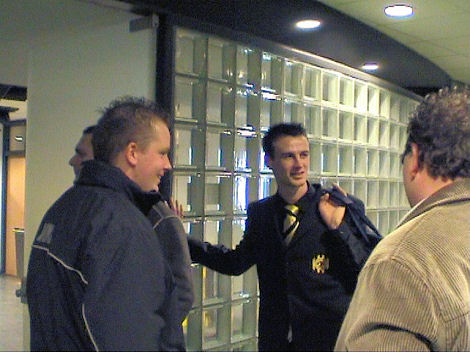

|
Roda JC - NAC (3-2) 26 november 2006
|
Op west waren er enkele opmerkelijke spandoeken te zien met teksten zoals:
"we shall not be moved", "ACAB" en een tribute aan
Harry Roberts.
Buiten de vele WSU-vlaggen was er ook in het gastenvak een gele vaandelzee
zichtbaar. De ruim 400 supporters van NAC hadden in het kader van een speciale
actie gratis vervoer including 100 NAC-kiddies.
Vanwege de schorsing van Kujovic stond Bram Castro voor het eerst in de basis
van Roda JC.
De irritante Leonardo speelt Kah uit en bedient De Graaf die vrij voor de
doelman
0-1 hoog in de touwen jaagt, (40').
Is dat even een feest....
Zoetebier tast mis op een lange hoge voorzet van Vandamme.
Oper die de bal al doende op een presenteerblad krijgt kan simpel inkoppen,
hoewel de bal tergend langzaam en slechts ternauwernood via de linkerpaal inrolt
is het plots 1-1, (53').
Eigenlijk een beschamend doelpunt zeker gezien de knullige missers van Oper
eerder deze wedstrijd. Maar goed, jool = jool.
Tijd voor een feestsigaar dan wel pret-sigaret...
Saeijs maakt de arbitrage duidelijk dat de nummer 7 van NAC een doodschop
heeft uitgedeeld aan een Roda-speler.
Tevreden rokers in Z18. De tweede helft was aanmerkelijk spannender dan de
gezapige eerste helft.
Cissé bedient De Fauw die beheerst afrondt: 2-1, (63').

Feest op het veld.
Feest op de tribunes.
Bijna feest, het betreft een buitenspeldoelpunt.
Clubtopscorer Ramzi gaat met een prachtige kopbal 3-1 scoren, (81').
Zelfs de oude garde Z16 is vandaag zo vrolijk.
Zonneveld brengt de spanning terug in de 86e minuut: 3-2.
In de 4 (!) minuten extra tijd weet NAC er een vrije trap uit te halen. Vorige
keer
werd het zo 3-3....
Castro redt echter geweldig waarna een wildwestsituatie voor het doel ontstaat.
Gelukkig kan de defensie opruimen en behaalt Roda eindelijk weer eens
een overwinning.
Bij het bedanken van het publiek krijgt Agustien een trap onder zijn kont van
Ramzi.
In de Kickoff iemand met deze mooie trui, maar waar blijven de spelers?
In de omloop wordt gezongen om de spelers.
In goed overleg wordt besloten naar het hoofdgebouw te gaan op opheldering te
vragen waarom er vanavond geen spelers kwamen.
Van Van Tornhout werden we niet veel wijzer.

Davy de Fauw stond ons uitvoerig te woord en betreurde de gang van
zaken. Hij
was met Kah en nog een speler aangewezen om de KO te bezoeken. Kah
liet
verstek gaan wegens een blessure. De Fauw was gewoon in gesprekken
met
anderen blijven hangen.
Stadionspeaker Frijns belt Huub Narinx op.
Deze komt vrijwel onmiddellijk en staat ons vriendelijk te woord. Hij laat ons
weten net zo verbaasd te zijn als ons en het probleem in de volgende bespreking
met het team mee te nemen.

Humphrey Rudge en Koempelin wisselen telefoonnummers uit. Humf baalt ervan
dat hij morgen niet mee mag spelen op Kaalhei.
Tot slot de nieuwe coup van Kujovic. Kennelijk heeft hij zich de kritiek op zijn
vorige snit aangetrokken... Vanavond bereikte ons het nieuws dat onze
rellenneger Faino met een klaplong
in het ziekenhuis van Heerlen is beland. Zijn toestand is zorgwekkend.
Voor eenieder die met hem begaan is gelieve Chantal de Jager te contacteren
voor nadere info.
© Koempels Pleasure Dome
|